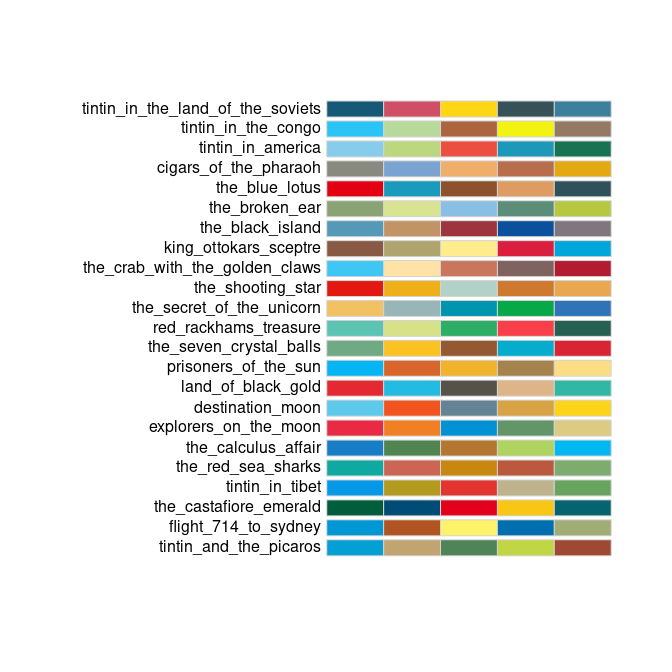
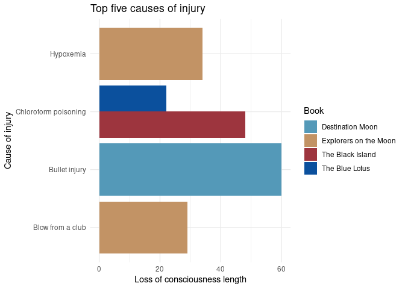
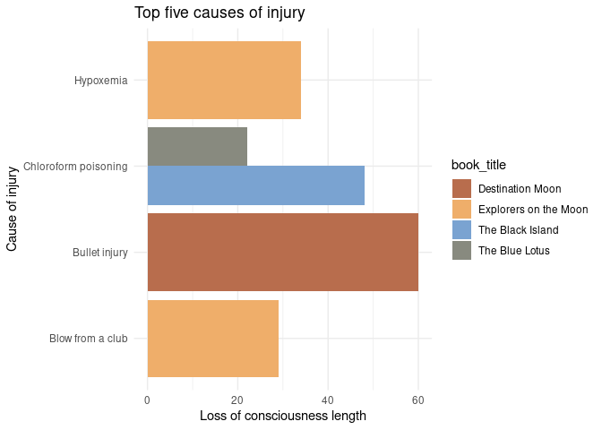
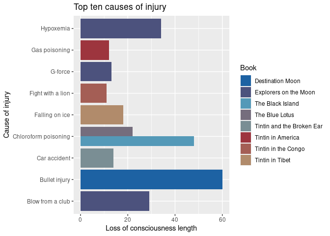
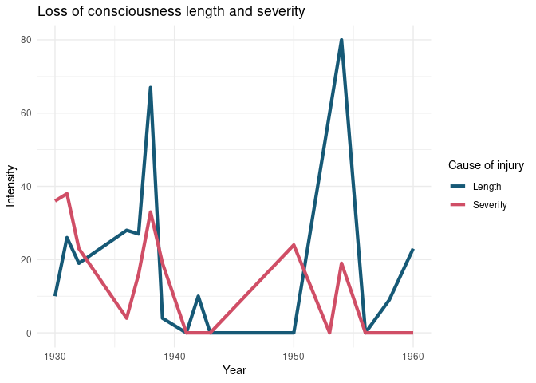

The goal of tintin is to provide palettes generated from Tintin covers. There is one palette per cover, with a total of 24 palettes of 5 colours each. Includes functions to interpolate colors in order to create more colors based on the provided palettes.

Installation
You can install the development version of tintin like so:
remotes::install_github("pachadotdev/tintin")Example
This is a basic example which shows you how to create a plot. We’ll plot the top five causes of injury in the tintin_head_trauma dataset that comes with the package.
library(dplyr)
library(ggplot2)
library(tintin)
total_head_trauma_5 <- tintin_head_trauma %>%
arrange(-loss_of_consciousness_length) %>%
filter(row_number() <= 5)
ggplot(total_head_trauma_5) +
geom_col(aes(x = cause_of_injury, y = loss_of_consciousness_length,
fill = book_title), position = "dodge") +
labs(x = "Cause of injury", y = "Loss of consciousness length",
title = "Top five causes of injury") +
theme_minimal() +
scale_fill_manual(values = tintin_colours$the_black_island,
name = "Book") +
coord_flip()
What is special about the package is being able to pass the colours as a function to ggplot2. We’ll adapt the previous example to show that case.
ggplot(total_head_trauma_5) +
geom_col(aes(x = cause_of_injury, y = loss_of_consciousness_length,
fill = book_title), position = "dodge") +
labs(x = "Cause of injury", y = "Loss of consciousness length",
title = "Top five causes of injury") +
theme_minimal() +
scale_fill_tintin_d(option = "cigars_of_the_pharaoh", direction = -1) +
coord_flip()
# Note that I can also write the palette name as
# "cigars of the pharaoh" or even as "CiGaRS of ThE Pharaoh"
ggplot(total_head_trauma_5) +
geom_col(aes(x = cause_of_injury, y = loss_of_consciousness_length,
fill = book_title), position = "dodge") +
labs(x = "Cause of injury", y = "Loss of consciousness length",
title = "Top five causes of injury, again") +
theme_minimal() +
scale_fill_tintin_d(option = "cigars of the pharaoh", direction = -1) +
coord_flip()What happens if we need more colours than 5? The functions in the package can fix that. We’ll plot the top ten causes of injury.
total_head_trauma_10 <- tintin_head_trauma %>%
arrange(-loss_of_consciousness_length) %>%
filter(row_number() <= 10)
ggplot(total_head_trauma_10) +
geom_col(aes(x = cause_of_injury, y = loss_of_consciousness_length,
fill = book_title), position = "dodge") +
labs(x = "Cause of injury", y = "Loss of consciousness length",
title = "Top ten causes of injury") +
scale_fill_manual(values = tintin_clrs(
n = length(unique(total_head_trauma_10$book_title)),
option = "the black island"),
name = "Book") +
coord_flip()
# or alternatively
ggplot(total_head_trauma_10) +
geom_col(aes(x = cause_of_injury, y = loss_of_consciousness_length,
fill = book_title), position = "dodge") +
labs(x = "Cause of injury", y = "Loss of consciousness length",
title = "Top ten causes of injury") +
scale_fill_manual(values = tintin_pal(option = "the black island")(8),
name = "Book") +
coord_flip()The use of colour instead of fill is analogous. Let’s plot the top ten causes of injury per year to see it.
library(tidyr)
total_head_trauma_y <- tintin_head_trauma %>%
group_by(year) %>%
summarise_if(is.integer, sum) %>%
pivot_longer(loss_of_consciousness_length:loss_of_consciousness_severity) %>%
mutate(
name = ifelse(name == "loss_of_consciousness_length", "Length", "Severity")
)
ggplot(total_head_trauma_y) +
geom_line(aes(x = year, y = value, color = name), linewidth = 1.5) +
labs(x = "Year", y = "Intensity",
title = "Loss of consciousness length and severity") +
theme_minimal() +
scale_colour_manual(
values = tintin_pal(option = "tintin in the land of the soviets")(2),
name = "Cause of injury"
)